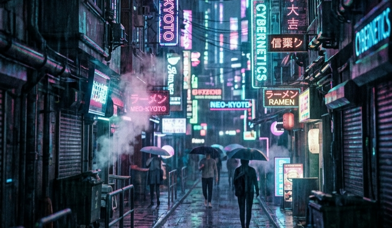
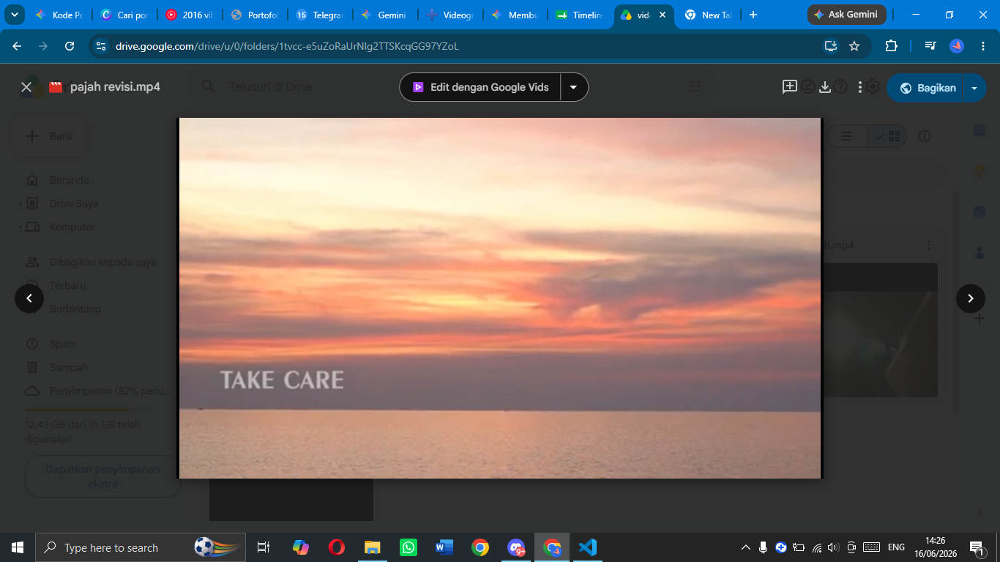

Karya Ku

Aplikasi Pendataan Pasien berbasis web
Sistem frontend Data tetap aman dan tidak hilang meskipun halaman web di-refresh, browser ditutup, atau komputer dimatikan. Dilengkapi fitur canggih buat export ke dokumen Word dan integrasi barcode data.
Aplikasi pendataan pasien web
Sinematik Cyberpunk
Eksperimen visual prompt-engineering untuk ngehasilin atmosfer sci-fi dan neon cyberpunk.
Hasil Karya Ku
Sinematik playful vibe
Hasil momen yang sudah di edit, ada di link berikut.
Hasil Karya Ku